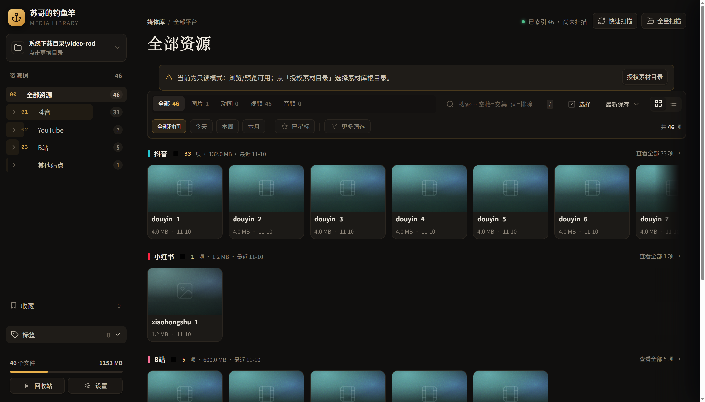
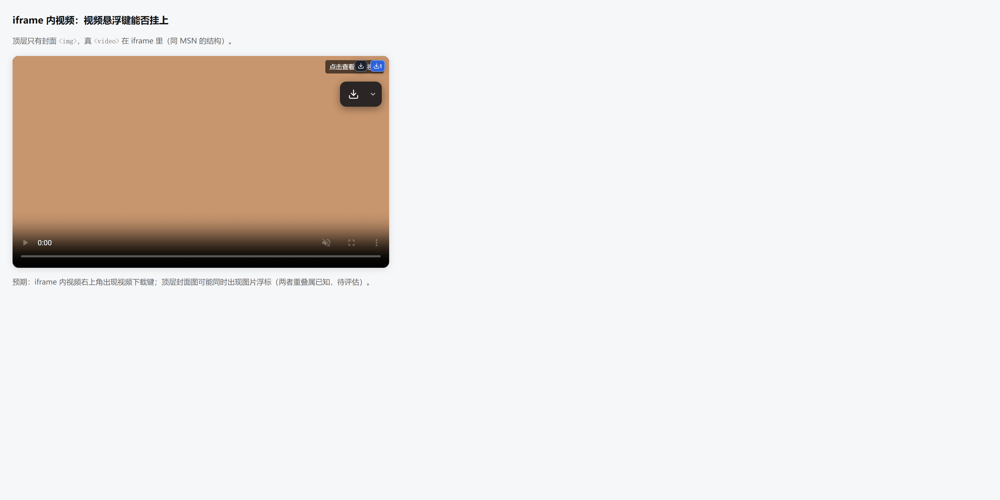
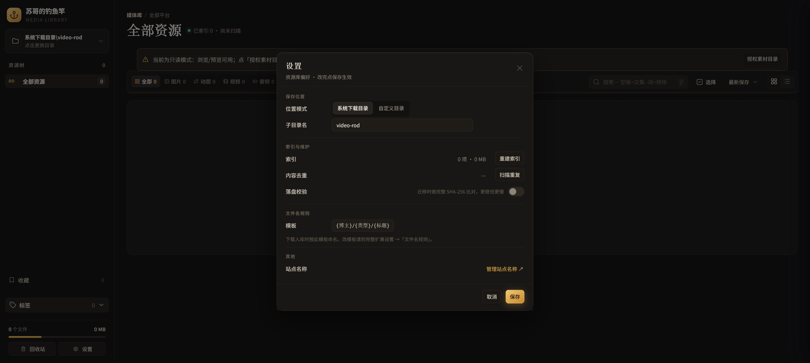
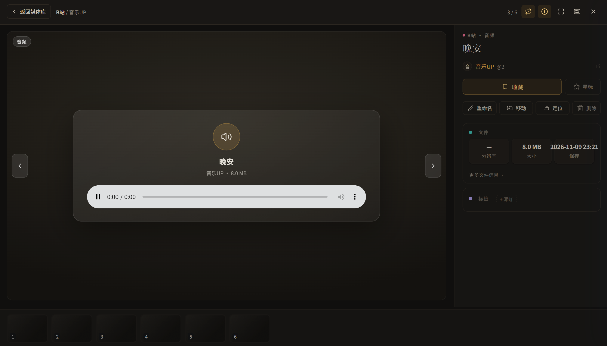
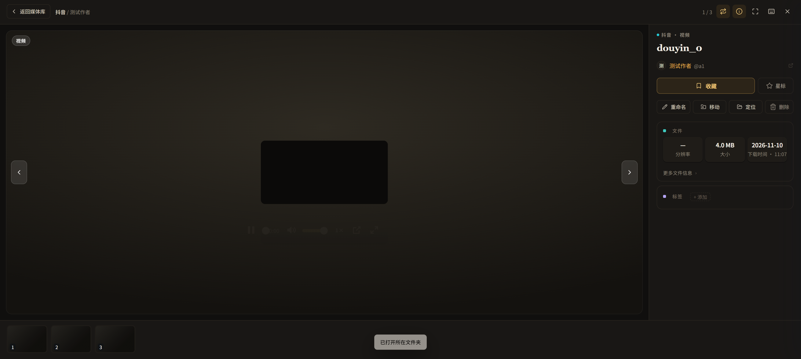

| FIELD NOTES · 工具手记 | NO. 01 / 2026. 11 |
A TOOL FOR ONE PERSON
试了 6 个工具都差最后一步，
我给自己写了个不上架的插件
下载器只管抓，素材库只管收，中间那道「把文件放好、叫对名字、记住出处」的活，一直没人接。这个从不上架的小东西，只对我一个人的别扭负责。
| 文 / 苏哥 · 约 6 分钟 | 自用 · 不上架 · 纯本地 |
上周三晚上 11 点，我在赶一版方案，需要三个月前存的一张参考图。
我记得清清楚楚存过。收藏夹翻了，网盘搜了，文件传输助手也翻了，最后在下载文件夹第 6 屏找到它——名字叫 IMG_20260814_091744(1).jpg。
四十分钟。就为了找一张自己的图。
那晚我没怪自己记性差。我打开浏览器，把能找到的下载工具又挨个试了一遍。我想搞清楚一件事：明明每一款都能「存下来」，为什么我每次都「找不回来」。
图 01 / 示意插画。真实的文件名比这更没规律。
先说结论：不是它们做得不好，是它们各管一段。
猫抓是我最服气的一个，开源、免费、几百 KB，网页里播过的视频基本都能嗅出来。可它到「下载」就停了，往 Downloads 一丢，后面不管。
素材库那头正好反过来。Eagle、Billfish 的整理、标签、预览做得比我这套好得多，但它们不会自己上网抓东西——得我先把文件一个个搬进去。
抓图插件只管图，视频一概不认。
剩下几款，卡在别的地方。据官网，Video DownloadHelper 免费版够日常用，但去水印、无限高清转换要买一次性授权；公开评测里提到 CocoCut 有每日上限和限速，MPMUx 要播放前先手动启用、不支持批量；IDM 是收费软件。还有一条更根本的：Chrome 商店政策不允许上架扩展提供 YouTube 下载，所以商店版碰这类网址普遍直接失效。
图 02 / 示意插画。功能本身没问题，只是最顺手那步常在里面。
THE TURN
我把这一圈试完，反而想明白了。
这些工具不是不肯把事做完，是不能。它们要上架、要过审核、要设置付费墙、要做大多数人用得上的功能。一个要伺候几百万人的产品，没道理为「某人想让文件按博主自动分文件夹」这种小事加班。
而我这个，从第一行代码起就没打算上架。
它只需要伺候我一个人。
不用过商店审核，所以不必为了合规把某些能力砍掉；不用做付费墙，所以不用把最顺手的那步藏在 Pro 后面；不用照顾所有人的习惯，所以我那些别人看着莫名其妙的别扭要求，都能一条条满足。
市面上的工具都在做「下载」，我要的是「下载完不用再整理」。
中间那道没人愿意接的活，我自己接了。

图 03 / 真实界面。左边那棵树，是「下载即归档」自己长出来的。
THE LIFE OF ONE IMAGE
那张图后来怎么样了
现在我在网页上看见想要的，鼠标移过去，右上角浮出一个下载按钮，点一下就存；懒得动鼠标就右键，或者按 Alt+Shift+V 开面板，把这一页抓到的东西一次勾走。

图 04 / 真实界面。不用先打开任何面板。
存的时候，它不叫 IMG_20260814 了。它会去看这是谁的、这一页叫什么，按我定的规矩生成名字，再自己走进「站点／作者／作品」那个文件夹。B 站一个分 P 纪录片，就归到「第几话」那一层；同一个网页存一组图，自动收进以标题命名的子文件夹。落盘那一刻，索引也写好了。

图 05 / 真实界面。规矩只定一次，之后每次都照办。
半年后我要用它，打开本地库搜两个词就出来，词前面加个减号还能排除。点开信息栏，原帖地址还在——直链带签名，过几天就失效，原帖不会。能回到出处，我才敢说这东西真存下来了。

图 06 / 真实界面。信息栏里留着的，是回得去的路。
顺手还补了几件小事：同一个文件在不同地方存过三遍，硬盘里只占一份，删的时候也只是退一条引用；视频的音轨和画面在本地合并，不重编码、不掉画质；预览能连播、能十档倍速、GIF 能逐帧；误删进回收站，捞得回来。

图 07 / 真实界面。每个数字都是我某天真的用得上，才留下来。
这些都不是什么了不起的功能。但每一件，都是我自己在某个晚上真的被绊过一次，才加上去的。给几百万人做工具，这些大概排不进优先级；给自己做，它们就是全部。
THE FINE PRINT
也得说清楚它不做什么
有 DRM 保护的站点明确不做；YouTube 更高的档位主动藏起来，不硬撑；站点一改版，取名字可能暂时失灵，文档里对此留了一串踩坑记录。它安装时要全站读写权限，这是全站嗅探的前提，但所有数据都留在我自己硬盘上，不上传、不注册、不联网。
还有一句必须放前面：它只用来存我自己有版权、或者拿到授权的东西。别拿它搬别人的付费内容，尊重创作者是底线。
回到那四十分钟。工具解决不了「我为什么存了这么多」，但至少下次打开文件夹，每样东西都在它该在的位置，名字看得懂，出处找得回。
收藏的意义不是占有，是还能再遇见。
我这个插件大概永远不会上架。它不是做给所有人的，它只是把我自己那道没人接的最后一步，接上了。
YOUR TURN
你的下载文件夹里现在躺着多少个文件？
评论区报个数。
如果这篇让你想起了谁，转给那个总说「我明明存过」的朋友——他大概也刚翻完第 6 屏。
| SOURCES 竞品限制据各产品官网与公开评测整理； 未引用未经核实的数据或排名。 |
IMAGES 图 01–02 为示意插画； 图 03–07 为真实界面截图。 |
COLOPHON FIELD NOTES · NO. 01 2026. 11 · 松烟墨 × 香槟金 |
本文为个人工具使用笔记，不构成对任何站点服务条款的规避建议；请遵守内容版权与平台规则。